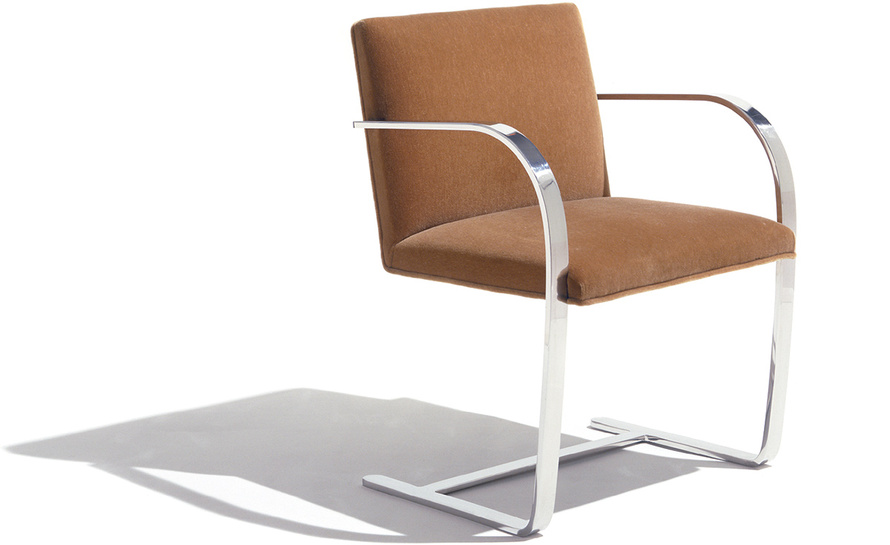
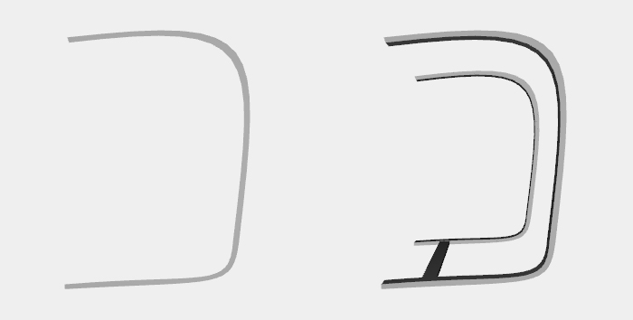
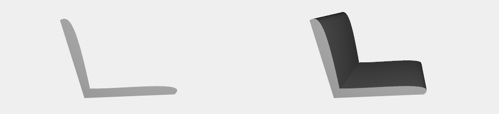
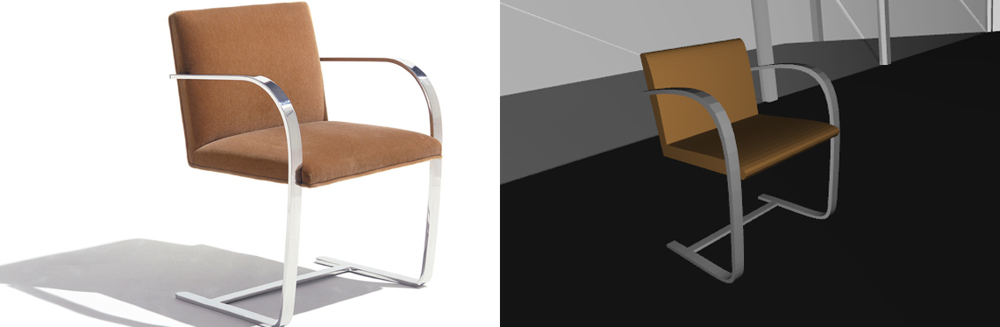

Brno Chair
Description
The Brno chair (model number MR50) is a modernist cantilever chair designed by Ludwig Mies van der Rohe and Lilly Reich in 1929-1930. The Brno chair has become a modern furniture classic. It has very clean lines, consisting of a steel frame in a single piece, bent into a C-shape from the middle of the back, round past the front edge of seat (to create arms), and back under the seat to create a cantilever, with taut seat and back upholstered in leather.
Legs
The function brno_chair build a 3D model just taking the color of the pillows as a parameter. The legs of the chair are built drawing a series of points on ([0, 1]) axes, mapping them with bezier using the function bs2() to create the side surface, and extruding them with EXTRUDE([0.16]) - or EXTRUDE([2.05]) for the trasversal bars.
Pillows
The same technique is used for the pillows. An array of two sequences of points draws the lateral surface, mapped with bs2() and then extruded of ([2.05]). The bottom pillow and the back pillow are created in different times, although they could be created together. All the pillows are then structed and colored by the parameter passed before.
Complete model
Legs and pillows are then structed.
Sources: en.wikipedia